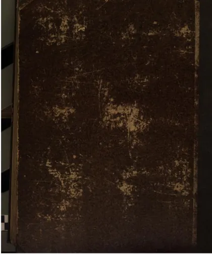

إحياء علوم الدين
Ihya' 'Ulumiddin
Baca Ihya' 'Ulumiddin (إحياء علوم الدين) karya Imam al-Ghazali secara gratis di Maktabah Ilmu: teks Arab, Indonesia (sebagian terjemah dibuat AI). Tanpa daftar, tanpa iklan.
Buka kitab iniLihat lemari ilmuDaftar isi
- إحياء علوم الدين
- كتاب العلم وفيه سبعة أبواب
- الباب الأول في فضل العلم والتعليم والتعلم وشواهده من النقل والعقل
- الباب الثاني في العلم المحمود والمذموم وأقسامهما وأحكامهما
- الباب الثالث فيما يعده العامة من العلوم المحمودة وليس منها
- الباب الرابع في سبب إقبال الخلق على علم الخلاف وتفصيل آفات المناظرة والجدل وشروط إباحتها
- الباب الخامس في آداب المتعلم والمعلم
- الباب السادس في آفات العلم وبيان علامات علما الآخرة والعلماء السوء (1)
- الباب السادس في آفات العلم وبيان علامات علما الآخرة والعلماء السوء (2)
- الباب السابع في العقل وشرفه وحقيقته وأقسامه
- الفصل الأول في ترجمة عقيدة أهل السنة في كلمتي الشهادة التي هي أحد مباني الإسلام
- الفصل الثاني في وجه التدريج إلى الإرشاد وترتيب درجات الاعتقاد
- الفصل الثالث من كتاب قواعد العقائد في لوامع الأدلة للعقيدة التي ترجمناها بالقدس
- الفصل الرابع من قواعد العقائد في الإيمان والإسلام وما بينهما من الاتصال وما يتطرق إليه من الزيادة والنقصان ووجه استثناء السلف فيه وفيه ثلاث مسائل
- كتاب أسرار الطهارة وهو الكتاب الثالث من ربع العبادات
- القسم الأول في طهارة الخبث والنظر فيه يتعلق بالمزال والمزال به والإزالة
- القسم الثاني طهارة الأحداث ومنها الوضوء والغسل والتيمم ويتقدمها الاستنجاء
- القسم الثالث من النظافة التنظيف عن الفضلات الظاهرة وهي نوعان أوساخ وأجزاء
- كتاب أسرار الصلاة ومهماتها
- الباب الأول في فضائل الصلاة السجود والجماعة والأذان وغيرها
- الباب الثاني في كيفية الأعمال الظاهرة من الصلاة والبداءة بالتكبير وما قبله
- الباب الثالث في الشروط الباطنة من أعمال القلب
- الباب الرابع في الإمامة والقدوة وعلى الإمام وظائف قبل الصلاة وفي القراءة وفي أركان الصلاة وبعد السلام
- الباب الخامس فضل الجمعة وآدابها وسننها وشروطها
- الباب السادس في مسائل متفرقة تعم بها البلوى ويحتاج المريد إلى معرفتها
- الباب السابع في النوافل من الصلوات
- كتاب أسرار الزكاة
- الفصل الأول في أنواع الزكاة وأسباب وجوبها والزكوات باعتبار متعلقاتها ستة أنواع زكاة النعم والنقدين والتجارة وزكاة الركاز والمعادن وزكاة المعشرات وزكاة الفطر
- الفصل الثاني في الأداء وشروطه الباطنة والظاهرة
- الفصل الثالث في القابض وأسباب استحقاقه ووظائف قبضه
- الفصل الرابع في صدقة التطوع وفضلها وآداب أخذها وإعطائها
- كتاب أسرار الصوم
- الفصل الأول في الواجبات والسنن الظاهرة واللوازم بإفساده
- الفصل الثاني في أسرار الصوم وشروطه الباطنة
- الفصل الثالث في التطوع بالصيام وترتيب الأوراد فيه
- كتاب أسرار الحج
- الباب الثاني في ترتيب الأعمال الظاهرة من أول السفر إلى الرجوع وهي عشر جمل
- الباب الثالث في الآداب الدقيقة والأعمال الباطنة
- كتاب آداب تلاوة القرآن
- الباب الأول في فضل القرآن وأهله وذم المقصرين في تلاوته
- الباب الثاني في ظاهر آداب التلاوة وهي عشرة
- الباب الثالث في أعمال الباطن في التلاوة وهي عشرة
- الباب الرابع في فهم القرآن وتفسيره بالرأي من غير نقل
- كتاب الأذكار والدعوات
- الباب الأول في فضيلة الذكر وفائدته على الجملة والتفصيل من الآيات والأخبار والآثار
- الباب الثاني في آداب الدعاء وفضله وفضل بعض الأدعية المأثورة وفضيلة الاستغفار والصلاة على رسول الله صلى الله عليه وسلم
- الباب الثالث في أدعية مأثورة ومعزية إلى أسبابها وأربابها مما يستحب أن يدعو بها المرء صباحا ومساء وبعقب كل صلاة
- الباب الرابع في أدعية مأثورة عن النبي صلى الله عليه وسلم وعن أصحابه رضي الله عنهم
- الباب الخامس في الأدعية المأثورة عند حدوث كل حادث من الحوادث
- كتاب ترتيب الأوراد وتفصيل إحياء الليل وهو الكتاب العاشر من إحياء علوم الدين وبه اختتام ربع العبادات نفع الله به المسلمين
- الباب الأول في فضيلة الأوراد وترتيبها وأحكامها
- الباب الثاني في الأسباب الميسرة لقيام الليل وفي الليالي التي يستحب إحياؤها وفي فضيلة إحياء الليل وما بين العشاءين وكيفية قسمة الليل
- كتاب آداب الأكل وهو الكتاب الأول من ربع العادات من كتاب إحياء العلوم
- الباب الأول فيما لابد للمنفرد منه وهو ثلاثة أقسام قسم قبل الأكل وقسم مع الأكل وقسم بعد الفراغ منه
- الباب الثاني فيما يزيد بسبب الاجتماع والمشاركة في الأكل وهي سبعة
- الباب الثالث في آداب تقديم الطعام إلى الإخوان الزائرين
- الباب الرابع في آداب الضيافة
- فصل يجمع آدابا ومناهي طيبة وشرعية متفرقة
- كتاب آداب النكاح وهو الكتاب الثاني من ربع العادات من كتاب إحياء علوم الدين
- الباب الأول في الترغيب في النكاح والترغيب عنه
… dan 217 bab lainnya.